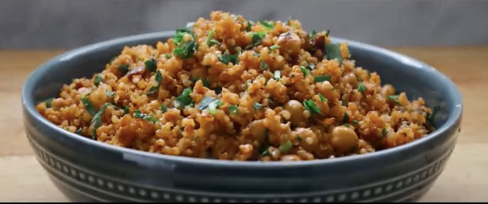

Quinoa

To fry cheakpeas you'll need:
- 1 Can of cheakpeas
- 1 to 2 tbsp of Olive oil
- 1 tsp paprika
- 1/2 tsp ground black pepper and salt
To make quinoa you'll need:
- 1 cup Quinoa
- 2-3tbsp Olive oil
- 1 cup Onion-chopped
- 2tsp garlic paste
- 2tsp ginger paste
- 3/4 cup Tomato passata
- 1/2tsp ground cumin
- 1/4tsp cayenne pepper
- 1+1/2 cup water
- Salt to taste
- 1/2cup coriander/parsley
Method:
- To a heated pan add the cooking oil and chickpeas.
- Cook on medium high heat until chickpea starts to
crisp up (it take about 2 to 3 minutes).
- Then add paprika, ground black pepper and salt.
- Fry for another 1 to 2 minutes or until the chickpeas are nicely coated with the spices.
- Transfer to a plate and set it aside for later.
- Now to the same pan add some cooking oil, onion and salt.
- Adding salt will release moisture from the onion and will help it cook faster so please don’t skip it.
- Fry on medium-high to high heat
- As soon as the onion starts to caramelize, add the ginger and garlic. Reduce the heat to medium low
and fry for about 1 to 2 minutes or until fragrant.
- Next add the strained tomatoes/passata and let it cook for about 2 minutes, in the mean time wash
the quinoa thoroughly with water and transfer to the pan along with ground cumin and cayenne pepper.
- Increase the heat to medium-high, add water and bring to a boil.
- Reduce the heat to low.
- Cover and cook on low heat for about 20 minutes or until quinoa is fully cooked.
- Add coriander(or presley) and the cheakpeas made before and ENJOY!